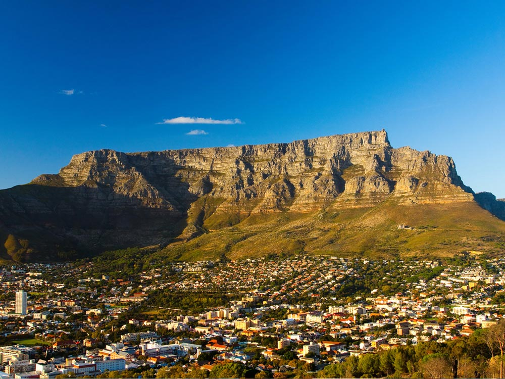
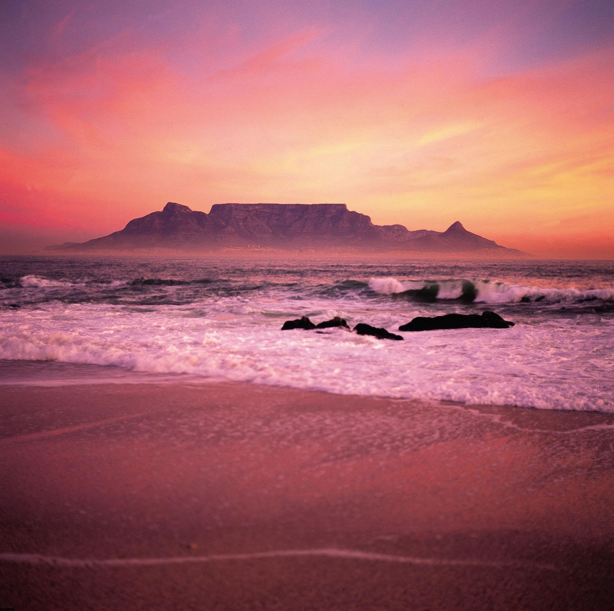
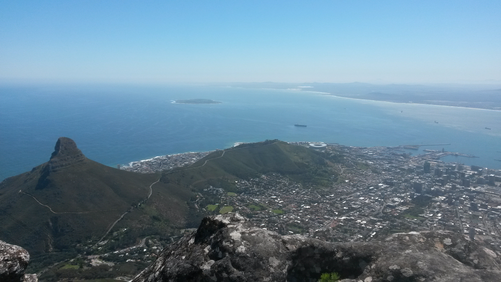
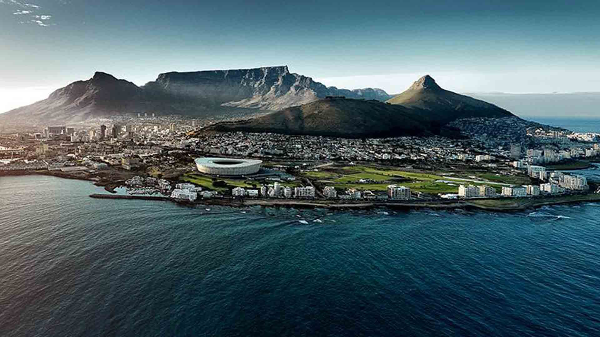

 Table Mountain (Khoekhoe: Huriǂoaxa, lit. 'sea-emerging'; Afrikaans: Tafelberg) is a flat-topped mountain forming a prominent landmark overlooking the city of Cape Town in South Africa. It is a significant tourist attraction, with many visitors using the cableway or hiking to the top. Table Mountain National Park is the most visited national park in South Africa, attracting 4.2 million people every year for various activities.
 Hiking on Table Mountain is popular amongst locals and tourists, and a number of trails of varying difficulty are available. Because of the steep cliffs around the summit, direct ascents from the city side are limited. Longer routes to the summit go via the Back Table, a lower area of Table Mountain to the south of the main, northern, plateau (which constitutes "Table Mountain" as seen from the Cape Town City Centre and Table Bay). From the Southern Suburbs side, the Nursery Ravine and Skeleton Gorge routes start at Kirstenbosch National Botanical Garden.
 The route via Skeleton Gorge to Maclear's Beacon is known as Smuts Track in memory of Jan Smuts, who was a keen hiker. The Bridle Path, or Jeep Track, makes a more gradual ascent from Constantia Nek along the road used to service the dams on Back Table. There are many other paths in popular walking areas on the lower slopes of the mountain accessed from Constantia Nek, Cecilia Park, Kirstenbosch, Newlands Forest and Rhodes Memorial.
 On the Atlantic side, the most popular ascent is Kasteelspoort, a gorge overlooking Camps Bay, but there are a few others, but not as many as on the east side of the mountain. There is a popular "Contour Path" that runs from Constantia Nek, and then, in succession, above Cecilia Park, Kirstenbosch Botanical Gardens, Newlands Forest, and from there, above Groote Schuur Estate, past the King's Blockhouse, at the north-east corner of Devil's Peak, immediately below the Mowbray Ridge cliffs, to the front of Devil's Peak and the north face of Table Mountain, ending at the bottom of Kloof Corner Ridge at the western end of the Table Mountain cliffs. It starts at Constantia Nek at 250 m, but immediately gradually climbs to around 320 m at Angela's Memorial and the look-out point above Cecilia Park.